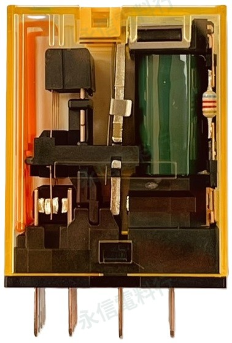

商品照片已套用永信電料行淡綠灰斜向浮水印；點選縮圖可切換實物、銘牌與底部腳位視角。
IDEC 和泉電氣
通用繼電器｜RU 系列
RU4S-C-D24 DC24V
IDEC RU 系列 4 極通用繼電器，完整型號 RU4S-C-D24。原廠資料確認為 DC24V、4 極、附動作表示 LED 的標準型。
完整型號RU4S-C-D24
線圈電壓DC24V
接點形式4PDT／4c
腳位14-pin
規格核對提醒
繼電器／插座外觀相近不代表可以直接互換。實際替換前請核對完整型號、線圈電壓或插座型式、接點／腳位、額定與設備配線。
本網站不顯示即時庫存、價格與交期。
PRODUCT OVERVIEW
規格核對重點
- 品牌：IDEC 和泉電氣
- 完整型號：RU4S-C-D24
- 系列：RU 系列
- 維修核對：線圈電壓、接點形式、腳位／插座與實際負載條件
NAMEPLATE INFORMATION
商品規格表
品牌IDEC 和泉電氣
系列RU 系列
完整型號RU4S-C-D24
線圈電壓DC24V
線圈電源DC
接點形式4PDT／4 組轉換接點
端子／腳位14-pin 插入式
接點額定（本體標示）6A 250VAC／6A 30VDC
馬達負載標示（本體）1/10HP 250VAC
動作表示 LED有
Latching Lever無（C 型式）
商品照片5 張
本頁以你提供的實物照片與可辨識銘牌為第一依據，再以 IDEC 官方完整型號／系列資料補充。未確認的數值不由相近型號推定。
VERIFIED SPECIFICATION DATA
詳細規格
原廠完整型號確認RU4S-C-D24
原廠描述單接點、4 極、標準型、動作表示 LED
線圈額定DC24V
操作桿無 Latching Lever
接點容量本件銘牌：6A @ 250VAC／30VDC
替代比對重點4PDT、DC24V、14-pin、接點容量、LED／操作桿與插座腳位
本頁 DC24V 與 RU4S-C-A220 的 AC220–240V 線圈不同；不可因其餘規格相近而混接。 系列共通資料僅用於補充辨識，不取代完整型號原廠規格書與本件實物銘牌。